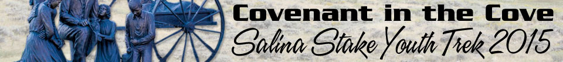

|  | ||
Trek Schedule InformationTrek CarnivalInformation for the trek carnival:
Spiritual GuidenceInformation for Spiritual guidence:Ward PickupInformation for ward pickup: | ||
|
Copyright © 2015 SalinaTrek.com. All Rights Reserved.
This website is NOT an official site of The Church of Jesus Christ of Latter-day Saints
and is intended strictly for the use of Salina Stake Youth Trek Participants. |